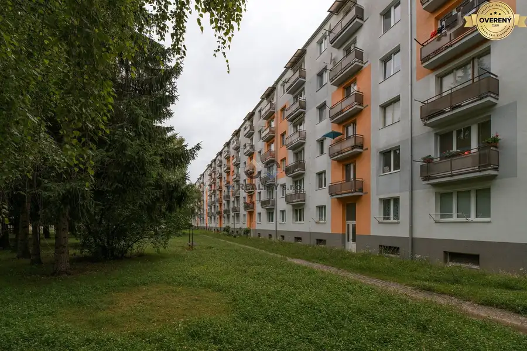
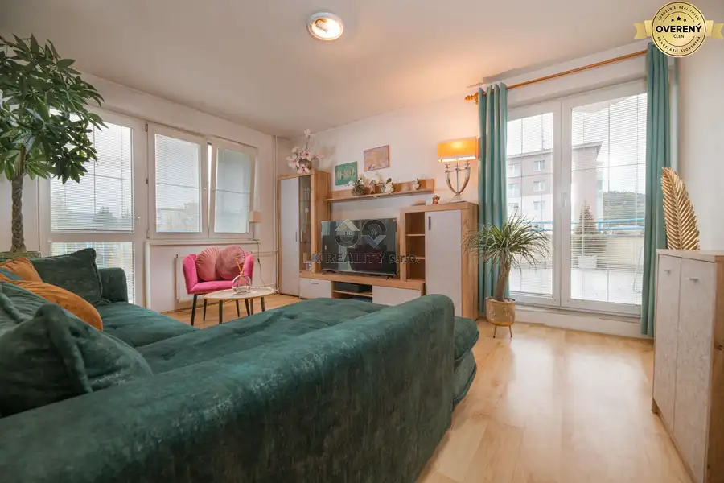
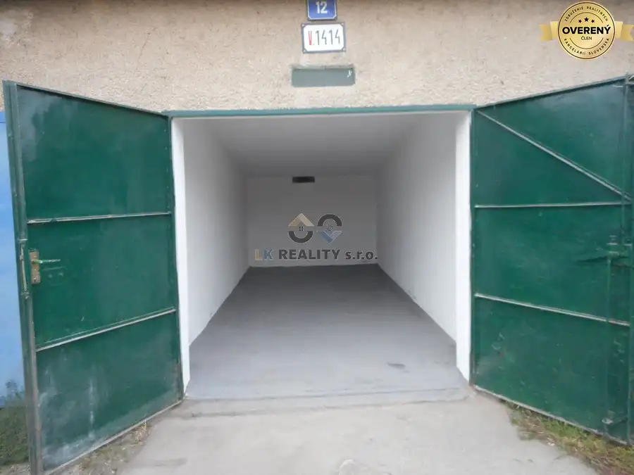
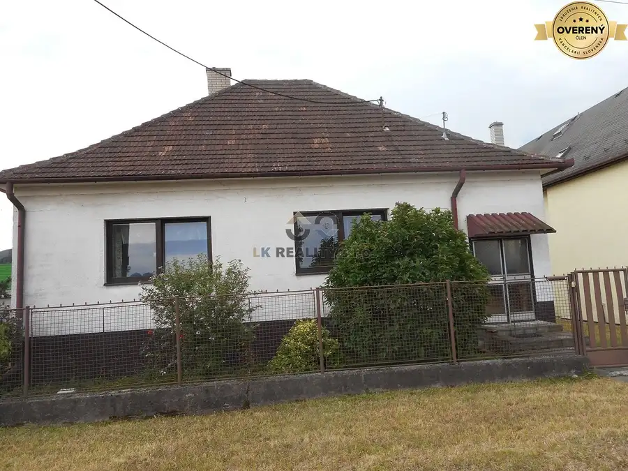
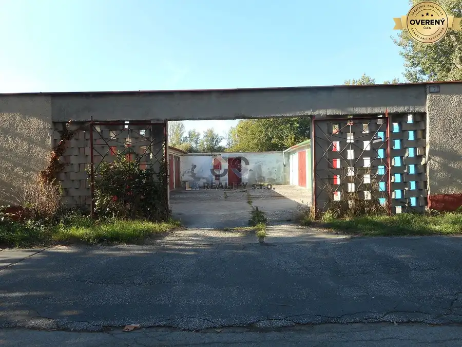
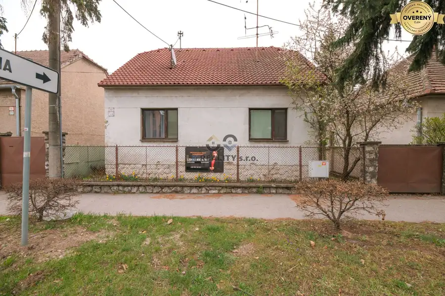
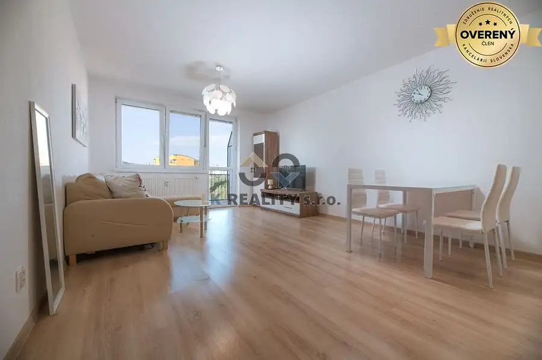
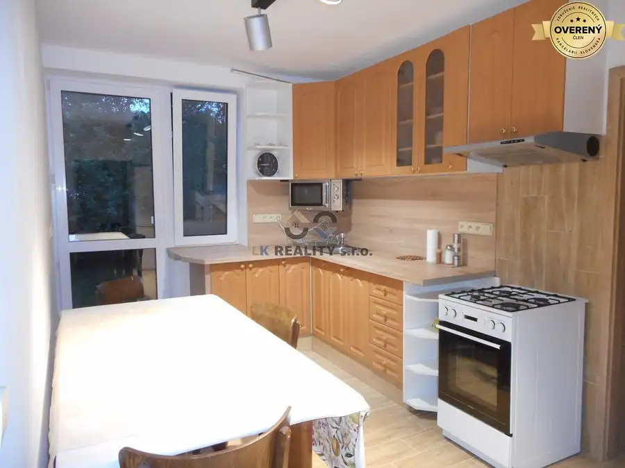
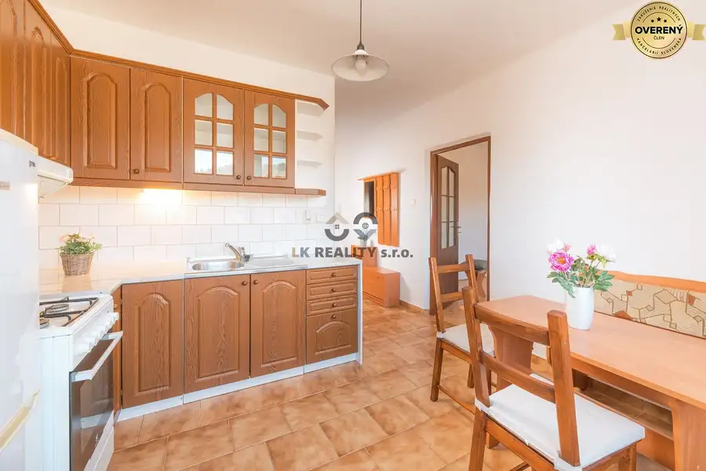

Aktuálna ponuka
10 nehnuteľností, predovšetkým byty, rodinné domy, ďalšie nehnuteľnosti. Každá má vlastnú stránku s fotkami, popisom a mapou.
Prezrieť ponukuLenka KičkováRealitná maklérka
Realitná maklérka · LK REALITY s.r.o.
Predaj a prenájom nehnuteľností · Trenčín, Nová Dubnica, Trnava




Rodinné domy10 279 000 €Ponúkame na predaj 3-izbový rodinný dom na sídlisku Sihoť v Trenčíne Trenčín 3-izbový110 m² Ponúkame na predaj 3-izbový rodinný dom v mestskej časti Sihoť na slnečnom, rovinatom pozemku s výmerou 754 m2. Šírka pozemku v prednej časti je 16 m…
Ostatné9 27 000 €Na predaj garáž s elektrinou a montážnou jamou na Nábrežnej ulici Trenčín 18 m² Ponúkame na predaj garáž o výmere 16 m2 vo vyhľadávanej lokalite na Nábrežnej ulici v Trenčíne. Ak hľadáte priestor pre parkovanie Vášho auta,…
Rodinné domy10 396 550 €Na predaj rodinný dom Trnava, Zelenečská ulica, pozemok 1085 m2 Trnava 3-izbový120 m² Ponúkame na predaj rodinný dom vo vyhľadávanej lokalite na Zelenečskej ulici v Trnave. Nehnuteľnosť v sebe skrýva možnosť využitia nielen na bývanie,…
Byt10 Cena dohodouPrenájom 2-izb. bytu v novostavbe s parkovacím miestom, Armádna ul. Trenčín 2-izbový50 m²5. podlažie Ponúkame na prenájom kompletne zariadený 2-izbový byt v novostavbe v tichom prostredí sídliska Sihoť V, Armádna ulica, Trenčín. Byt sa nachádza na 5.…
Rodinné domy10 Cena dohodouNa prenájom samostatné izby v rodinnom dome Trenčianska Teplá Trenčianska Teplá 5-izbový100 m² Ponúkame na prenájom 5-izbový kompletne zrekonštruovaný rodinný dom v Trenčianskej Teplej pre firemných pracovníkov, samostatných pracovníkov, alebo…
Byt10 Cena dohodouNa prenájom 1-izbový rekonštruovaný, zariadený byt, Soblahovská ulica Trenčín 1-izbový35 m²3. podlažie Ponúkame na prenájom čiastočne zariadený 1-izbový byt vo vyhľadávanej lokalite v tichom prostredí pri rodinných domoch, Soblahovská ulica, Trenčín.…Tomuto výberu zatiaľ nezodpovedá žiadna ponuka. Napíšte mi, čo hľadáte.
Volám sa Lenka Kičková. Som realitná maklérka kancelárie LK REALITY s.r.o. a pôsobím predovšetkým v lokalitách Trenčín, Nová Dubnica, Trnava a Trenčianska Teplá (Trenčiansky kraj).
10 nehnuteľností, predovšetkým byty, rodinné domy, ďalšie nehnuteľnosti. Každá má vlastnú stránku s fotkami, popisom a mapou.
Prezrieť ponukuTrenčín, Nová Dubnica, Trnava, Trenčianska Teplá a okolie. Ponuku si môžete prezrieť podľa lokality.
Nehnuteľnosti v lokaliteOdhad trhovej ceny, príprava prezentácie, obhliadky, zmluvy a odovzdanie nehnuteľnosti.
Dohodnúť stretnutieNa čo sa pýtate najčastejšie, skôr než sa stretneme.
Odhad trhovej ceny vychádza z aktuálnych ponúk a predajov v lokalite, nie z cenníkových tabuliek. Podmienky Vám poviem pri prvom telefonáte.
Najprv obhliadka a odhad ceny, potom príprava prezentácie (fotografie, popis, inzercia), obhliadky so záujemcami, rezervačná zmluva, kúpna zmluva, návrh na vklad do katastra a odovzdanie nehnuteľnosti. O každom kroku viete vopred.
Najrýchlejšie cez WhatsApp alebo telefón. Termín stretnutia alebo obhliadky dohodneme podľa Vás.